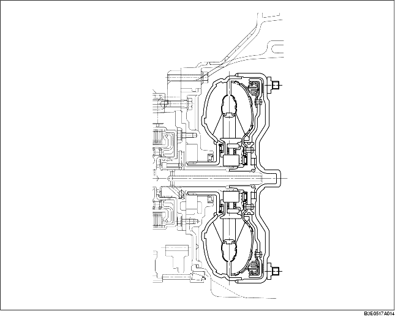

• The torque converter clutch mechanism mechanically engages the pump impeller and the turbine runner under a specified condition, and transmits the power, not through the fluid, but directly, preventing the slip loss of the torque converter.
• The torque converter has obtained sufficient transaxle efficiency and torque converting ratio that matches the output characteristic of each engine.
